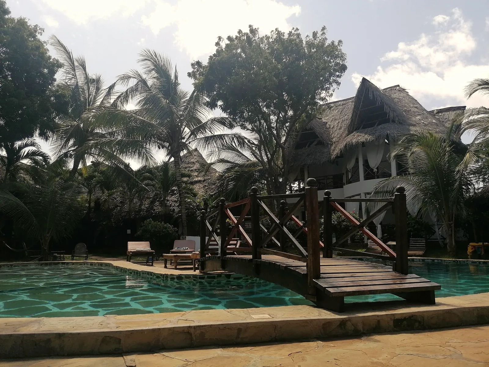
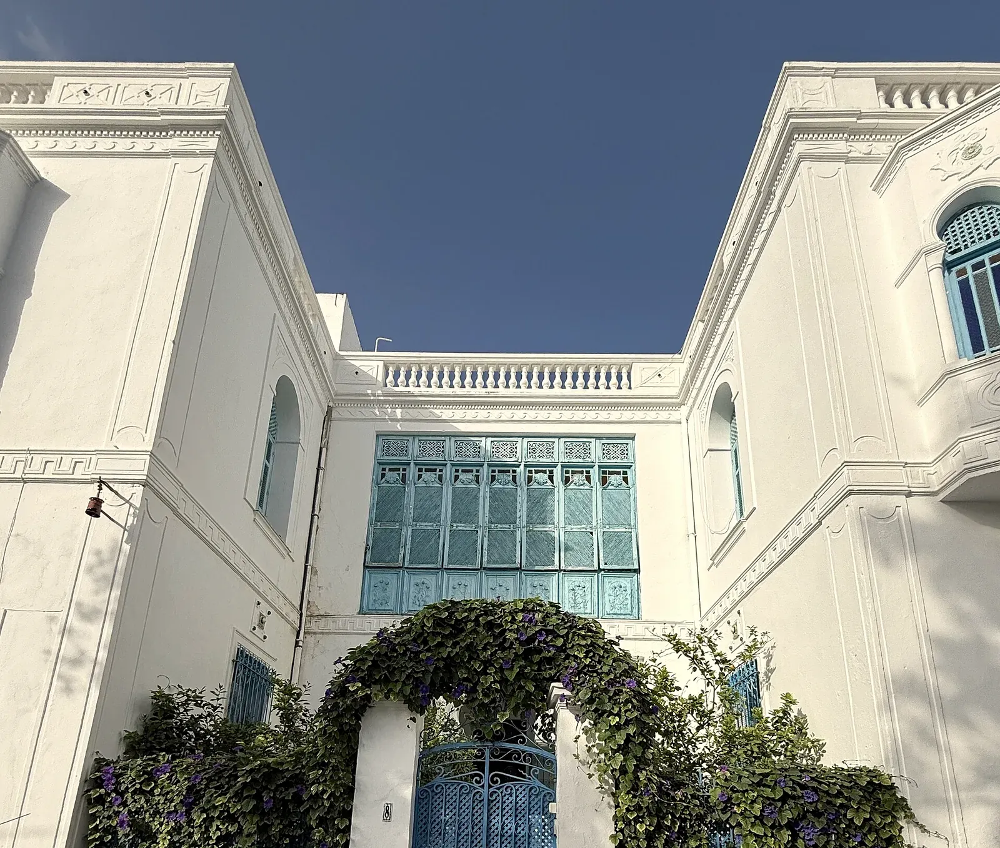
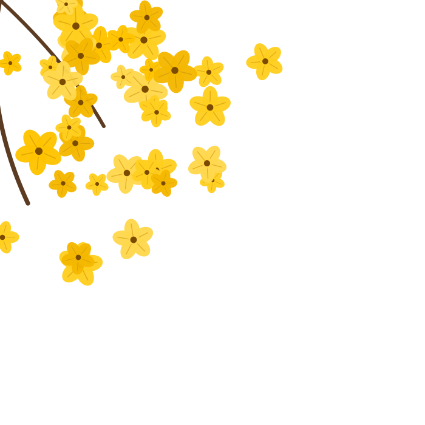
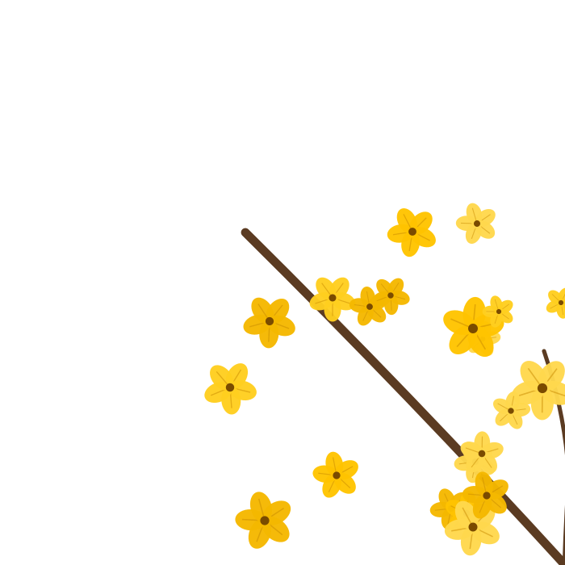
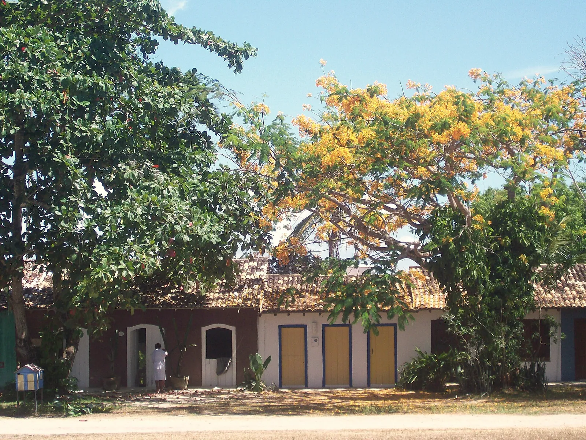
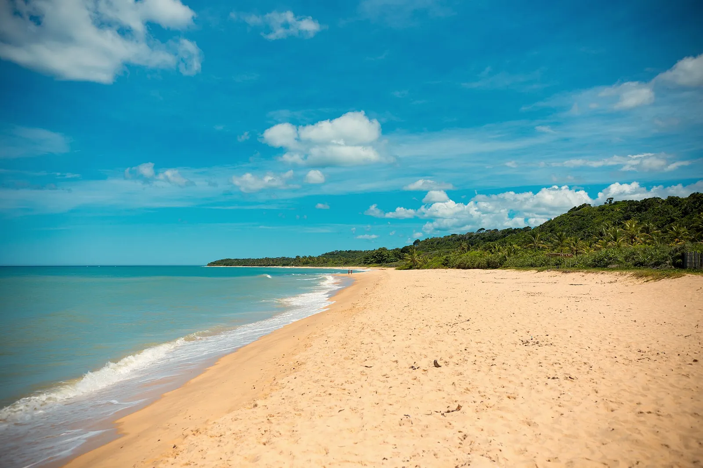
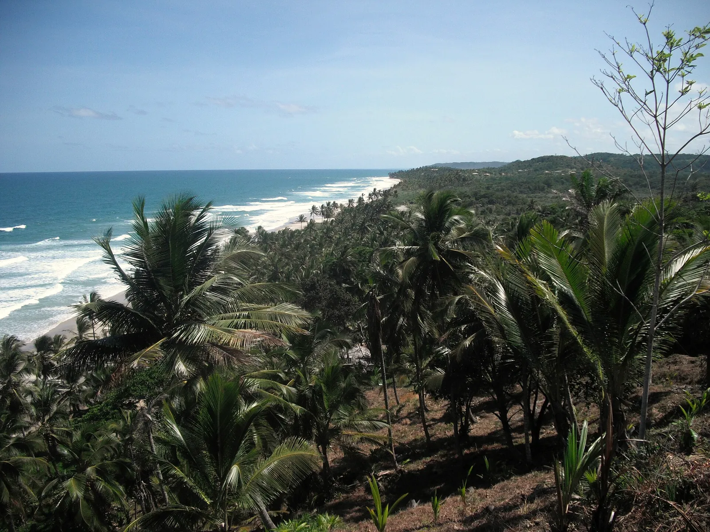
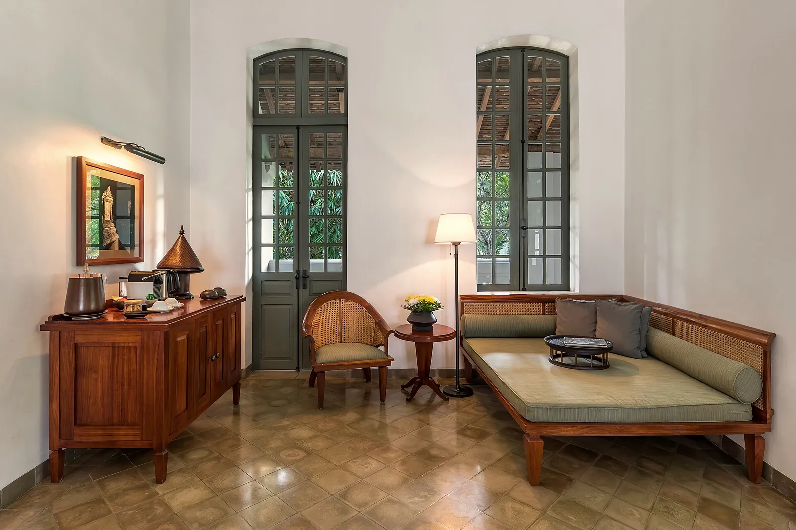

01 · 03
AURARESIDÊNCIASTrancoso
UM LUGAR
PARA VOLTAR
PERTO DE TUDO

EM VEZ DE CORREDORES, CAMINHOS ENTRE JARDINS LIGAM AS CASAS. ASSIM NASCEU A AURA.


O CONCEITO
A AURA É UM CONDOMÍNIO FECHADO DE APENAS 18 CASAS, DESENHADO EM TORNO DE PRIVACIDADE, BEM-ESTAR E DO JEITO LENTO DE VIVER DA COSTA DO DESCOBRIMENTO.
A dois quilômetros do Quadrado, as casas se abrem para jardins de restinga, com piscina, varandas largas e o som do mar ao fundo.
NOVACOSTADOURADA

DISPONÍVEIS
ENTRE O QUADRADO E A PRAIA DOS COQUEIROS
Trancoso guarda o ritmo de vila: ruas de terra, casas coloridas e praias largas. A Aura fica perto o bastante para ir a pé ao Quadrado e longe o bastante para ouvir só o vento.
A COSTA QUE VOCÊ QUERIAsuaESTE ANO
- Arraial d'Ajuda 25 km
- Aeroporto 7 km
- Quadrado 2 km
- Praia dos Coqueiros 1 km
- Itapororoca 6 km
- Caraíva 45 km


SUÍTES
3
ÁREA PRIVATIVA
178 — 202 m²

Casas térreas com jardim privativo e piscina, viradas para o nascente.
VER PLANTA COMPLETATÉRREO + JARDIM
AS CASAS VÃO DE 104 A 244 M², EM UM PAVIMENTO OU DUPLEX, COM VARANDAS GENEROSAS E SOLÁRIOS NA COBERTURA.
- CONDOMÍNIO FECHADO
- PISCINA
- JARDINS DE RESTINGA
- ESTACIONAMENTO
- ESPAÇO DE BEM-ESTAR
EM VEZ DE CORREDORES, CAMINHOS ENTRE JARDINS. EM VEZ DE MUROS ALTOS, VIZINHOS QUE VIRAM AMIGOS.